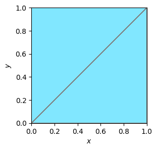
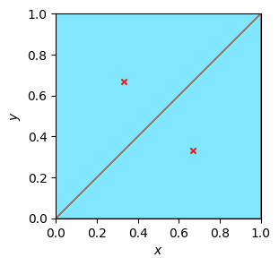

Operator¤
Colab Setup (Install Dependencies)
# Only run this if we are in Google Colab
if 'google.colab' in str(get_ipython()):
print("Installing dependencies from pyproject.toml...")
# This installs the repo itself (and its dependencies)
!apt-get install gmsh
!apt-get install -qq xvfb libgl1-mesa-glx
!pip install pyvista -qq
!pip install -q "git+https://github.com/smec-ethz/tatva-docs.git"
print("Installation complete!")
How to create an energy functional?¤
In tatva, we define any physical problem as an energy functional \(\Psi\) and then use JAX based differentiation to construct residual operator or tangent stiffness operator.
Operator module is the core of tatva. This is the functionality you would use always to build a energy functional. Operator module takes a mesh (or sub-mesh) with an element type such as tatva.element.Tri3 or tatva.element.Quad4 and allows one to
- Interpolate nodal values at quadrature points using
op.eval - Take gradient of nodal values at quadrature points using
op.grad - Integrate quadrature values over the domain using
op.integrate
Tip
To build any problem or more specifically any energy functional, all we need are these three functions and how to handle jax.numpy arrays.
How to define Operator¤
To create an Operator we need three quantities, a mesh, an element type and batch size
op = Operator(mesh, element_type, batch_size)
The first two arguments are the mesh and the elemetn type.
Mesh and Elements in tatva
In tatva the Mesh object is a utitlity that contains the coordinates of the node and the connectivity as numpy arrays or as jax.numpy arrays. Apart from this Mesh class has no extra functionalities. We do provide a few functions to quickly generate very simple meshes such Mesh.unit_square or Mesh.Rectangle for quick testing. We expect users to create their own meshes using standard softwares such as GMSH and then define the mesh object.
mesh = Mesh(coords, connectivity)
For element types, currently tatva provides H\(^1\) finite elements such as Line2, Tri3, Quad4, Tetrahedron4 and Hexahedron8. But one easily define there own elements as shown in some of the examples.
The last argument that Operator class take is the batch_size. This controls how many elements will be processed together simultaneously.
Batch size for computational efficiency
If the batch_size is equal to total number of elements than all the elements will be processed (for op.grad, op.integrate or op.eval) simulatenously using jax.lax.map. If the batch_size is 1 then it will process elements one after other. Fixing the batch_size allows you to control the computaitonal speed and the memory requirements.
By default Operator has batch_size equal to total number of elements. But when the mesh is versy large then it always efficient to set a value for batch_size.
Getiing started with Operator¤
For demonstration of the Operator class, we define a unit square domain with a triangular mesh. For ease, tatva provides a simple function Mesh.unit_square from tatva.Mesh module to generate square domain with a triangular mesh.
import jax
jax.config.update("jax_enable_x64", True) # use double-precision
import jax.numpy as jnp
from tatva import Mesh
mesh = Mesh.unit_square(n_x=1, n_y=1, type="triangle", dim=2)
print("Coordinates of the nodes in the mesh: ", mesh.coords)
print("Connectivity of the elements in the mesh: ", mesh.elements)
Coordinates of the nodes in the mesh: [[0. 0.]
[0. 1.]
[1. 0.]
[1. 1.]]
Connectivity of the elements in the mesh: [[0 2 3]
[0 3 1]]
Visualize the mesh
import matplotlib.pyplot as plt
plt.figure(figsize=(3, 3), layout="constrained")
ax = plt.axes()
ax.tripcolor(
*mesh.coords.T,
mesh.elements,
color="gray",
lw=0.1,
facecolors=jnp.ones(mesh.elements.shape[0]),
cmap="managua_r",
)
ax.set_aspect("equal")
ax.set_xlabel("$x$")
ax.set_ylabel("$y$")
ax.margins(0.0, 0.0)
plt.show()

Let us define the Operator. We use the default batch_size.
from tatva import Operator, element
tri = element.Tri3()
op = Operator(mesh, tri)
Evaluation at quadrature points¤
Note
op.eval: Interpolate nodal values at quadrature points.
We can use the op to evaluate nodal values at the quadrature points. The function op.eval takes the nodal values and return the values at the quadrature points. The shape of the input array to the Operator.eval method is (n_nodes, n_dofs). And the shape of the output array is (n_elements, n_quadrature_points, n_dofs).
For example, below we evaluate the coordinate values of the mesh at the quadrature points. This basically means mapping the parameterized quadrature points (\(\in [-1, 1]^2\)) to the physical space.
quad_points_in_physical_space = op.eval(mesh.coords)
print(quad_points_in_physical_space)
print("Shape of the quadrature points in physical space: ", quad_points_in_physical_space.shape)
[[[0.66666667 0.33333333]]
[[0.33333333 0.66666667]]]
Shape of the quadrature points in physical space: (2, 1, 2)
In the above example, the shape of the output array is (2, 1, 2) because we have 2 elements in the mesh and 1 quadrature point in each element. And each element has 2 degrees of freedom (2 displacement components). To test whether the output is correct, we can plot the quadrature points in the physical space. Below, we plot the mesh and the quadrature points in the physical space.
Visualize the quadrature points in physical space
quad_points_in_physical_space = quad_points_in_physical_space.squeeze()
plt.figure(figsize=(3, 3), layout="constrained")
ax = plt.axes()
ax.tripcolor(
*mesh.coords.T,
mesh.elements,
color="gray",
lw=0.1,
facecolors=jnp.ones(mesh.elements.shape[0]),
cmap="managua_r",
)
ax.scatter(
quad_points_in_physical_space[:, 0],
quad_points_in_physical_space[:, 1],
c='tab:red',
s=20,
marker="x",
)
ax.set_aspect("equal")
ax.set_xlabel("$x$")
ax.set_ylabel("$y$")
ax.margins(0.0, 0.0)

Gradients of nodal values¤
Note
op.grad: Evaluate the gradient of nodal values at quadrature points.
For most physical problems, we often need to evaluate the gradient of the nodal values at the quadrature points. For example, in the case of linear elasticity, we need to evaluate the gradient of the displacement field at the quadrature points to compute the strain tensor. The strain tensor is given as
The Operator class provides a method grad that can be used to evaluate the gradient of the nodal values at the quadrature points.
Below, we will see how to use the Operator.grad method to evaluate the gradient of the nodal values at the quadrature points. To do this, we can simply pass our nodal values (in this case, the coordinate values) to the Operator.grad function and it will return the gradient of the nodal values at the quadrature points.
Note
Remember to pass the nodal values to the Operator.grad function, it must be arranged in the shape (n_nodes, n_dofs).
op.grad(mesh.coords)
Array([[[[1., 0.],
[0., 1.]]],
[[[1., 0.],
[0., 1.]]]], dtype=float64)
As a sanity check, we can see that the gradient is an identity matrix since the gradient \(\partial x / \partial x = 1\) and \(\partial y / \partial y = 1\) and all other gradients are zero.
Info
The shape of the vector returned by the Operator.grad function is (n_elements, n_quadrature_points, n_dofs, n_dofs). The first dimension is the number of elements, the second dimension is the number of quadrature points, the third dimension is the number of degrees of freedom, and the fourth dimension is the number of degrees of freedom.
For a triangular element, the shape will be (n_elements, 1, 2, 2). For a quadrilateral element with 4 quadrature points, the shape will be (n_elements, 4, 2, 2).
Integrating a function over the domain¤
Note
op.integrate: Integrate an array over the domain spanned by the operator's mesh.
To create a energy functional we need to integrate quadrature values over the domain. For example, integrating the strain energy density over the domain to get the total strain energy.
where \(\sigma\) is the stress tensor and \(\epsilon\) is the strain tensor evaluated at the quadrature points. A finite element method way of integrating this over a discretized domain is to approximate the integral as a sum of integrals over the elements in the domain.
where \(\mathcal{E}\) is the set of all elements in the domain, \(\mathcal{Q}\) is the set of all quadrature points in the domain, \(J(\xi)\) is the Jacobian of the transformation from the reference element to the physical element, and \(\sigma(\xi)\) and \(\epsilon(\xi)\) are the stress and strain tensors evaluated at the quadrature point \(\xi\).
The integrate method of the Operator class takes values at quadrature points and returns the integral of the function over the domain.
For example, we want to integrate a function \(f(x, y)\) over the square domain. We assume that the function is constant and equal to 1.0.
We will first define nodal values of the function. Since the function is constant, we can simply define the nodal values as an array of shape n_nodes.
f_nodal = jnp.full(mesh.coords.shape[0], fill_value=1.0)
We can then evaluate the function at the quadrature points using the op.eval method.
f_at_quad = op.eval(f_nodal)
And then can pass it to the integrate method.
op.integrate(f_at_quad)
Array(1., dtype=float64)
If you will notice the above integral is equal to 1 which also happens to be the area of the domain. This is not a coincidence. The integral of a constant function = 1 over a domain is the area of the domain. So this is a sanity check.
Tip
op.integrate can also take nodal values and even a scalar value. Below, we pass scalar value 1 to op.integrate and also the nodal_values.
op.integrate(1)
Array(1., dtype=float64)
op.integrate(f_nodal)
Array(1., dtype=float64)